Chicago1956
Crown Hall
Mies van der Rohe. Una sola sala libre colgada de cuatro pórticos de acero exteriores.
Subes una foto del espacio como está hoy y recibes una propuesta que respeta muros, ventanas y columnas. Y si vas a construir, lo diseñamos en acero: estructura, cantidades y un render que vende.
Instala acero.studio en tu celular, enfoca el espacio como está hoy y la IA lo rediseña completo: muros, vidrio, luz, mobiliario y estructura en acero.
Sin tiendas ni registro: se instala desde el navegador del celular.
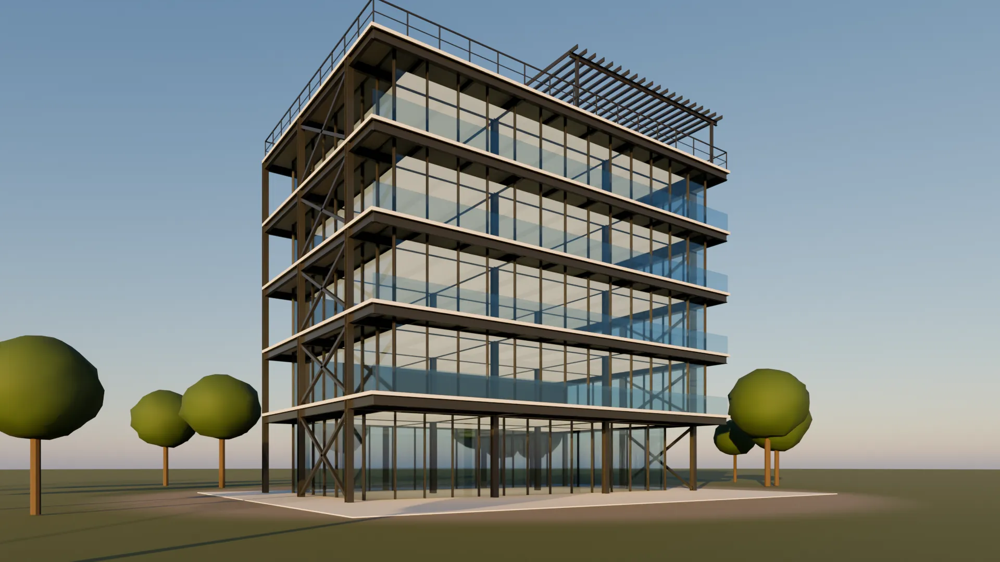
acero.studio convierte una foto real de tu espacio en una propuesta de rediseño, y te conecta directo con un asesor para llevarla a obra en acero.
Desde la cámara o la galería. Interior o fachada, tal como está hoy, sin planos ni medidas.
Minimalista, industrial, cálido, escandinavo o tropical. Interior, fachada o una estructura nueva en acero.
Lo que no se mueve, lo que cambia y la estructura en acero predimensionada, con su render.
Hablas directo con un asesor: materiales, toneladas de acero, tiempos y presupuesto.
El lápiz rojo es la herramienta más vieja del estudio. Hoy marca lo que la IA propone cambiar: todo lo rojo en esta página es una decisión de diseño.
«En el taller de herrería de mi abuelo utilizábamos un lápiz rojo.»
Sobre el acero, el rojo se ve aunque haya grasa, polvo u óxido. Por eso las marcas del taller son las mismas que usamos en cada propuesta:
Toca un estilo y mira cómo cambia el mismo local: la columna de acero, los muros y las ventanas no se mueven, lo demás sí.
Mándale una foto al asistente: elige estilo y alcance, y nuestro equipo te escribe por WhatsApp con la propuesta marcada en rojo.
Interiores, fachadas y estructuras en acero · locales, oficinas, vivienda y bodegas
Así leo tu espacio: muros, ventanas y la columna de acero (en azul y rojo) no se mueven. Lo demás se puede rediseñar.
Cámara o galería, tal como está hoy.
Minimalista, industrial, cálido, escandinavo…
Interior, fachada o estructura en acero.
Habla directo con un asesor real.
Cada tipología sale del mismo motor de acero del Studio 3D y se renderiza en Blender a la hora dorada o a la hora azul, lista para la lámina de venta.
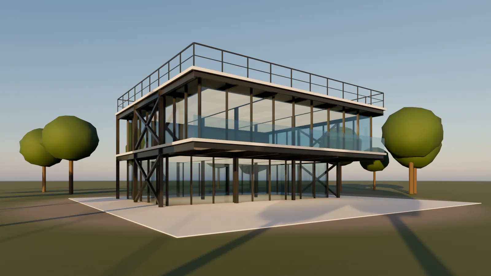
Casa · hora dorada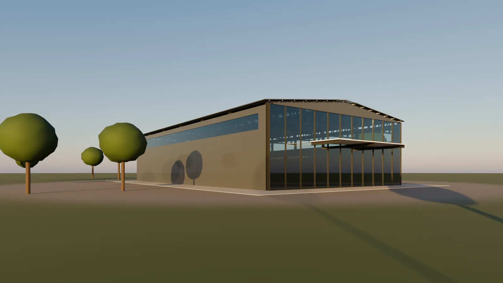
Nave · hora dorada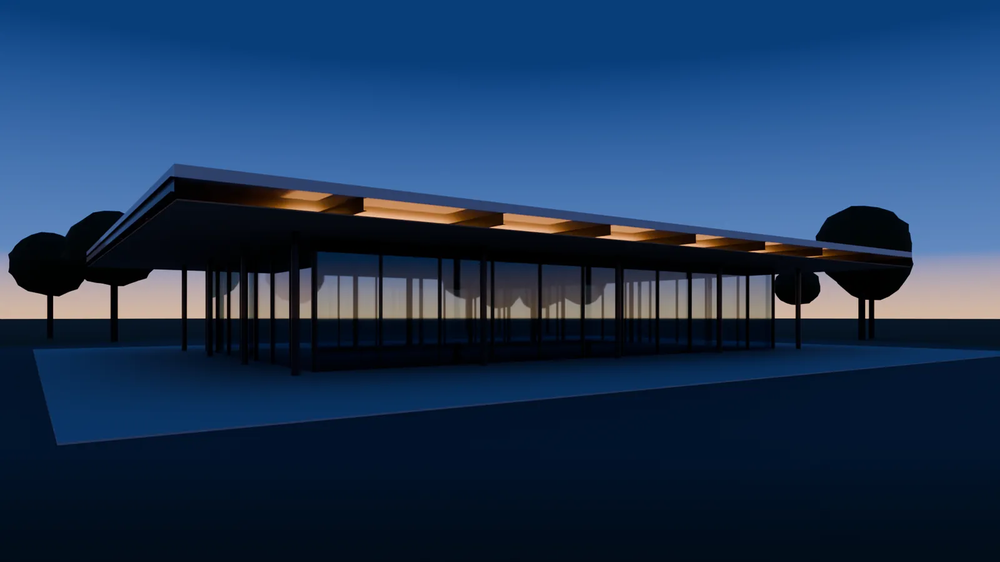
Pabellón · hora azul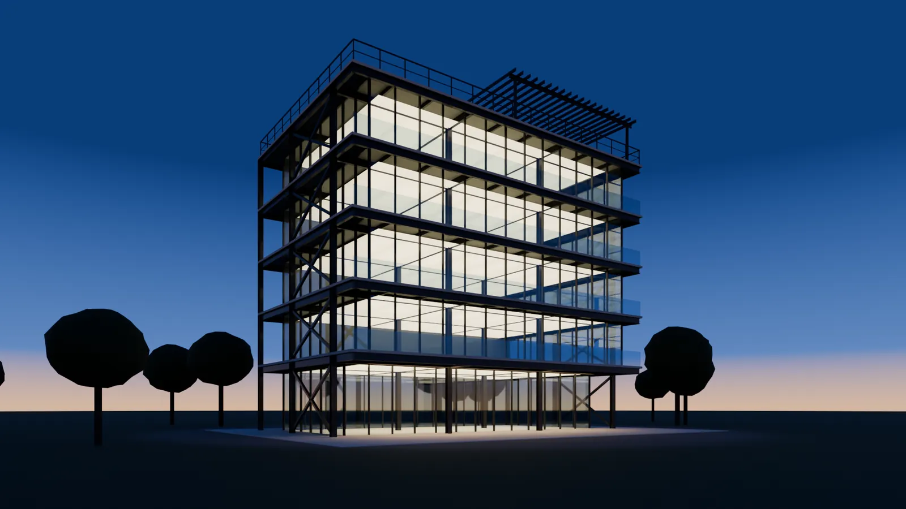
Edificio · hora azulLas herramientas con las que hacemos cada proyecto, abiertas para ti. Sin instalar nada, en el computador o en el celular.
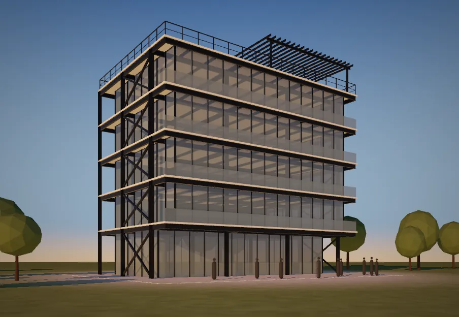
Studio 3DMuros, losas, columnas y vigas de acero; recorrido cinemático, modo caminar y render comercial con sol real.
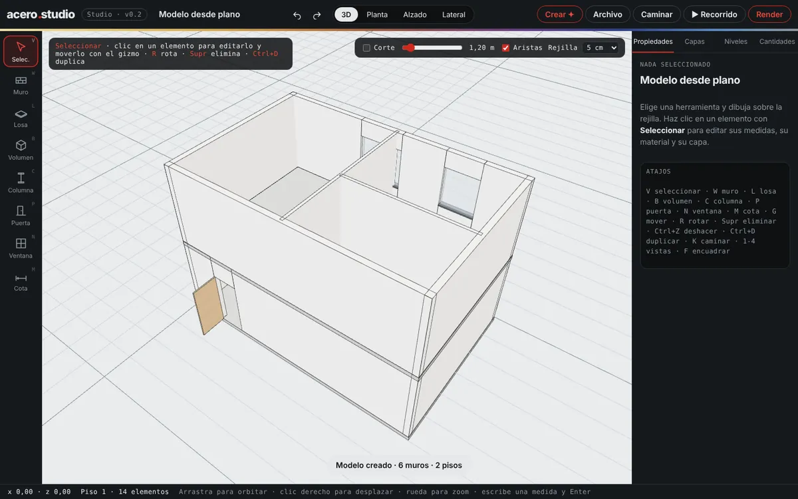
Imagen → 3DSube un plano o un boceto a mano y levantamos los muros; de una foto de edificio salen pisos, crujías y la estructura en acero.
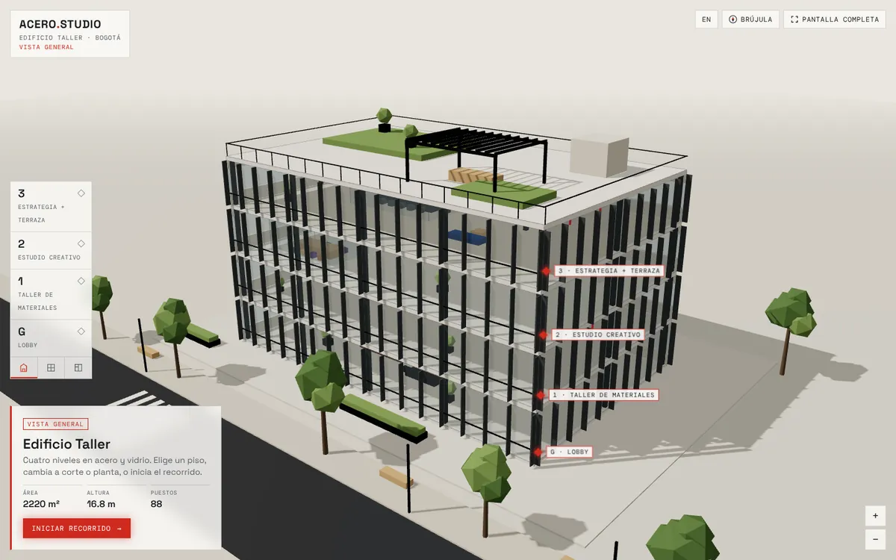
Explorador por pisosPara constructoras e inmobiliarias: corte por niveles, planta, rombos con cada espacio y una ruta guiada hasta el ascensor.
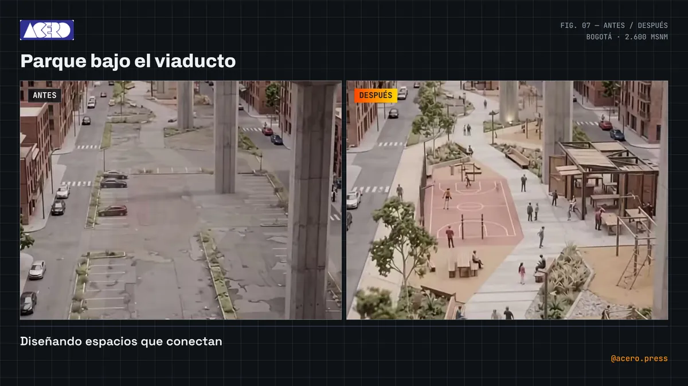
PresentacionesAntes y después en reel vertical, láminas de venta, animación automática de cámara y un visor 3D de un solo archivo para tu web.
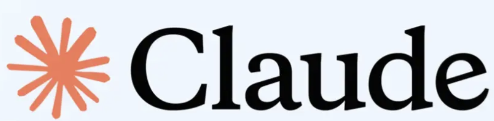
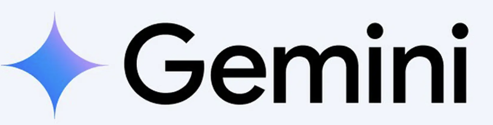
Elige la tipología y las medidas. Usamos el mismo motor del Studio 3D: perfiles, toneladas y kg/m² al instante, y la estructura lista para abrir en 3D.
Al recalentar el acero aparece una capa de óxido tan fina que cambia de color con la temperatura: pajizo, bronce, púrpura y azul. Esa escala es la paleta de AceroStudio, siempre detrás del rojo del lápiz.
Obras donde el acero no se esconde: la estructura es la arquitectura.
Mies van der Rohe. Una sola sala libre colgada de cuatro pórticos de acero exteriores.
Piano y Rogers. Estructura y ductos por fuera, pintados por color según su función.
Se protege con su propia capa de óxido. Fachadas que cambian de color con los años.
BIG. Una fachada de acero inoxidable que se tuerce entre manzana y rascacielos.
Infraestructura visual e inteligencia espacial para constructoras, firmas de arquitectura, cadenas y desarrolladores que buscan vender sus proyectos antes de construirlos.
Explorador 3D por pisos, renders de venta y cantidades de acero para preventas y salas de ventas.
Del boceto a la estructura en acero en minutos, con IFC para Revit y láminas listas para presentar al cliente.
Estandarización de imagen e interiorismo para múltiples sedes. Propuestas conceptuales a escala.
Zonas de alto tráfico, recepciones y comedores pensados para capacidad y experiencia.
¿Tienes varios proyectos o sedes? Armamos un plan a la medida.
Arquitectura en acero, diseño de interiores y diseño con inteligencia artificial, pensado y escrito desde Bogotá.
Estructura prefabricada, menos peso sobre la cimentación y plantas libres de muros.
Foto real, estilo y propuesta que mantiene paredes, ventanas y columnas.
Cómo elegir la hora, la cámara a dos puntos de fuga y el entorno de un render comercial.
Qué exporta el Studio 3D y cómo llevarlo a Revit, AutoCAD, SketchUp o Blender.
Circulación, zonificación, acústica y luz natural definen la experiencia antes que el color.
La automatización no reemplaza la creatividad, elimina el trabajo repetitivo.